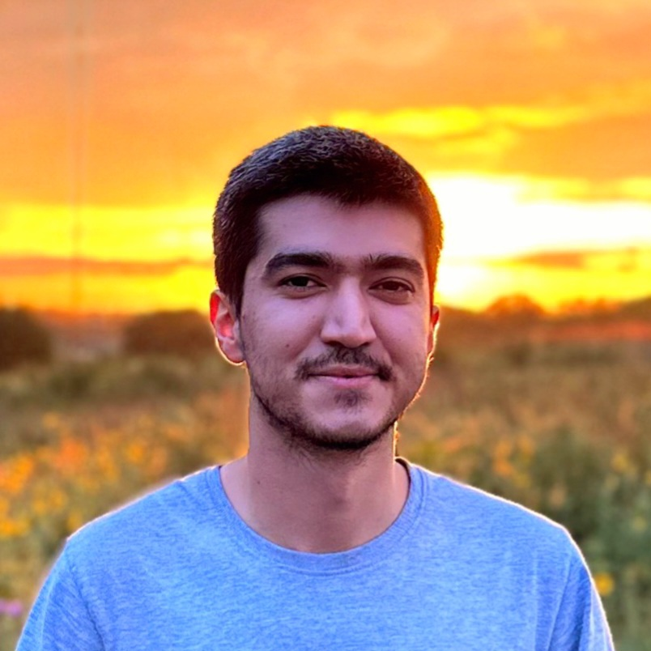

Masoud Ghazikor
KUmail: masoudghazikor@ku.edu
Gmail: masoudghazikor@gmail.com


Welcome to my GitHub page!
I am a Ph.D. student in the Department of Electrical Engineering & Computer Science (EECS) at the University of Kansas (KU), Lawrence, KS, USA. In 2020, I earned my BSc degree in telecommunication engineering with a minor in computer engineering from K. N. Toosi University of Technology (KNTU), Tehran, Iran. In my BSc project, I focused on the restoration methods in optical fiber networks. After finishing my BSc, I started my PhD studies at KU in 2022. I joined the WCNS group to pursue my research interests in wireless communications, interference analysis, and UAV communication. Besides research, I enjoy playing billiards, volleyball, and video games, as well as listening to rap songs and rapping in my free time!
Publications
-
Channel-Aware Distributed Transmission Control and Video Streaming in UAV Networks
Authors: M. Ghazikor, K. Roach, K. Cheung and M. Hashemi
Submitted to IEEE Transactions on Communications, 2024, DOI: 10.48550/arXiv.2408.01885 -
Interference-Aware Queuing Analysis for Distributed Transmission Control in UAV Networks
Authors: M. Ghazikor, K. Roach, K. Cheung and M. Hashemi
ICC 2024 - IEEE International Conference on Communications, Denver, CO, USA, 2024, DOI: 10.1109/ICC51166.2024.10623099 -
Exploring the Interplay of Interference and Queues in Unlicensed Spectrum Bands for UAV Networks
Authors: M. Ghazikor, K. Roach, K. Cheung and M. Hashemi
2023 57th Asilomar Conference on Signals, Systems, and Computers, Pacific Grove, CA, USA, 2023, DOI: 10.1109/IEEECONF59524.2023.10476884